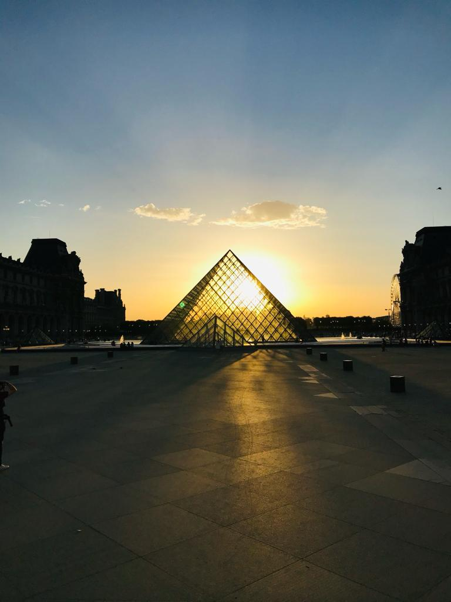
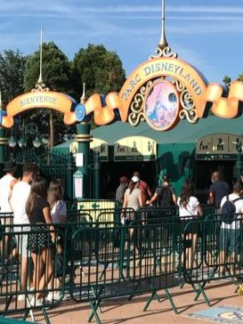

___Der Eifelturm:
Der Eiffelturm, eines der bekanntesten Wahrzeichen von Paris, wurde im Jahr 1889 anlässlich der Weltausstellung in Paris eröffnet.
Gustave Eiffel, ein französischer Ingenieur, war der Schöpfer dieses beeindruckenden Turms.
Er ist 324 Meter hoch und war zum Zeitpunkt seiner Fertigstellung das höchste Bauwerk der Welt.
Der Eiffelturm besteht aus mehr als 18.000 Einzelteilen und bietet einen atemberaubenden Panoramablick auf die Stadt.
Mit seiner filigranen Eisenkonstruktion und seiner Geschichte als Symbol für die Liebe und die Technik ist der Eiffelturm ein Muss für jeden Besucher von Paris.

___Das Louvre:
Das Louvre, eines der berühmtesten Kunstmuseen der Welt, wurde im Jahr 1793 eröffnet und hat eine faszinierende Geschichte.
Ursprünglich war es eine königliche Residenz, bevor es unter Napoleon Bonaparte zum Museum umgewandelt wurde.
Die ikonische Glaspyramide, die den Eingang schmückt, wurde 1989 hinzugefügt und von I. M. Pei entworfen.
Der Louvre beherbergt eine beeindruckende Sammlung von Kunstwerken aus verschiedenen Epochen und Kulturen, darunter die Mona Lisa, gemalt von Leonardo da Vinci und die Venus von Milo.
Mit seiner historischen Bedeutung und seiner beeindruckenden Kunstsammlung zieht das Louvre jährlich Millionen von Besuchern aus aller Welt an.
Arc de Triomphe
Der Arc de Triomphe, ein beeindruckendes Triumphbogenmonument in Paris, wurde im Jahr 1836 fertiggestellt, um die französischen Armeen zu ehren.
Der Entwurf des Bogens stammt von Jean Chalgrin, und seine reich verzierte Fassade ist ein beeindruckendes Beispiel für neoklassische Architektur.
Auf dem berühmten Bogen sind die Namen zahlreicher Schlachten und Generäle eingraviert.
Der Arc de Triomphe steht auf der Place de l'Étoile und bietet einen herrlichen Blick auf die Prachtstraße Champs-Élysées.
Mit seiner historischen Bedeutung und majestätischen Präsenz ist der Arc de Triomphe ein Symbol für die Siege und das Erbe Frankreichs.

___Disnyland Paris
Disneyland Paris, das magische Themenparkresort, öffnete seine Tore im Jahr 1992 und ist eine bezaubernde Kreation von The Walt Disney Company.
Dieser zauberhafte Ort in Marne-la-Vallée bietet eine einzigartige Kombination aus Disney-Zauber und europäischer Kultur.
Disneyland Paris umfasst zwei Themenparks: den Disneyland Park und den Walt Disney Studios Park, die gemeinsam unzählige Attraktionen, Shows und Unterhaltungsmöglichkeiten bieten.
Besucher können in die Welt der berühmten Disney-Charaktere eintauchen und magische Momente erleben. Mit seinen märchenhaften Landschaften und einer Vielzahl von Attraktionen ist Disneyland Paris ein Ort, an dem die Träume und Fantasien von Jung und Alt wahr werden.
 ___
Der Eifelturm:
___
Der Eifelturm: